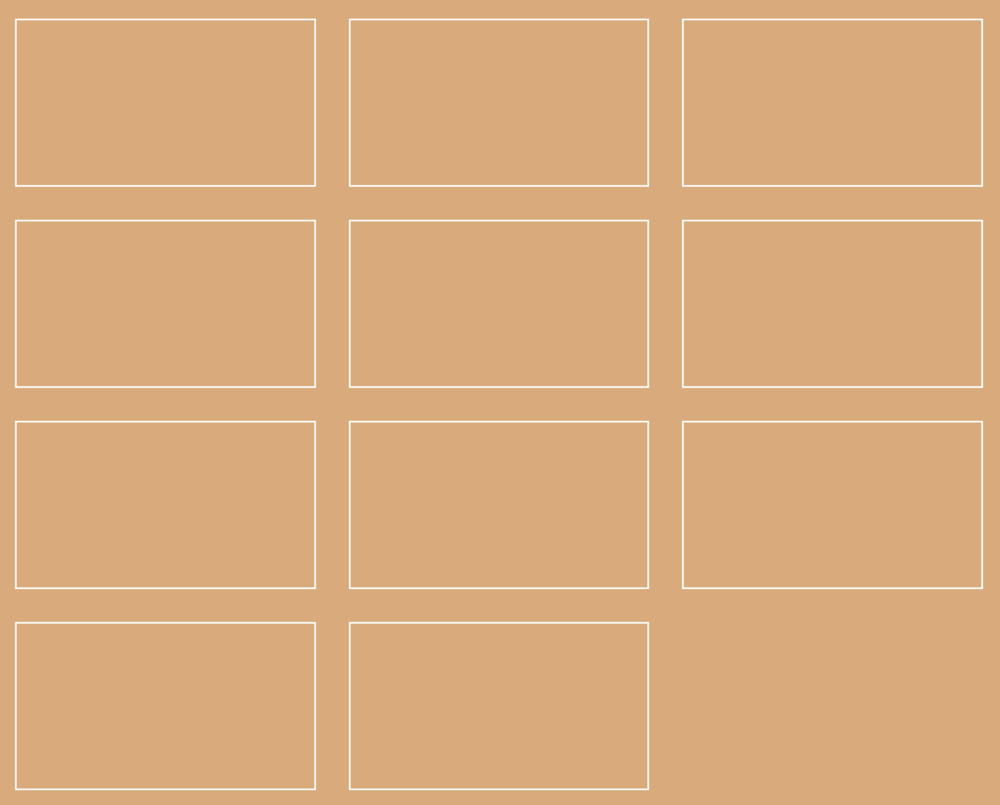

# Class 4 Responsive Web Design Programming Interactivity ---- Harbour Space --- ## Agenda <div style="text-align: left;"> 01/ RWD Basics 02/ Methodology 03/ Layouts 04/ Media queries 05/ CSS Grid --- ## RWD Basics --- ### Iphone announcement 2007 <img src="attachment/c1/iphone.png" /> Note: - As we talked about in class 1, the first iphone was released in 2009 - And after that the term Responsive Web Design was created in 2010. --- ### RWD - Responsive Web design Responsive Web Design by Ethan Marcotte 2010 <img src="attachment/c1/all_sizes.png" /> Note: - And after that the term Responsive Web Design was created in 2010. --- ## Mobile Web Usage growing <img src="attachment/c4/mobile-web-growing.png" /> Note: - Here we can see the usage of desktop and mobiles in a graph that goes from 2007 to 2015, with an interesting cut off point at 2014 - I could not find a newer graph then this, but I guess the gap might have even gotten bigger. --- ### Responsive viewport ``` css <head> ... <meta name="viewport" content="width=device-width, initial-scale=1"> </head> ``` The viewport meta tag ensures the page displays correctly on smaller screens Note: - You might have noticed this meta tag that is automatically added in the CodeSandbox projects. - When the first smart phone came out, web pages where not ready to be responsive. So a quick fix for this was for the browsers to scale the page down. - This is a tag that all web pages should have. It gives the browser instructions on how to control the page's dimensions and scaling. - On mobile devices, if this tag is missing, browsers might automatically scale the page, causing content to be too small or improperly laid out. --- ## Methodology --- #### Responsive web design (RWD) or responsive design <div style="text-align: left;"> is an approach to web design that aims to make web pages render well on a variety of devices and window or screen sizes from minimum to maximum display size to ensure usability and satisfaction </div> --- ### Screens  Note: - As today we have many screen sizes to think about. - We have the desktop, a big desktop, tablet, mobile phone, vertical tablet, vertical mobile --- ### Screens  Note: - And there are even more --- ### Screens  Note: - There is also not just couple of sizes of phones and tablets. - There is a device for every size --- ## "There is no mobile tablet or desktop" Note: - There is no mobile tablet or desktop - We have all sizes and this has made responsive web design a bit tricky ---  Note: - At one point it was possible to just add couple of breakpoints for the main sizes but now it kind of needs to flow correctly in all sizes. ---  Note: - Now we have to let it flow in every size --- ### Shall we look at some rsponsive sites Note: - Lets look at some responsive sites - If you remember any cool sites, then please share. --- <img src="attachment/c4/start-small.png" width="600px"/> Note: - It can be a good approach to start developing for a mobile page and then adjust when it gets bigger --- <section data-background-image="attachment/c4/start-small1.png" data-background-size="cover"> Note: Start small. --- <section data-background-image="attachment/c4/start-small2.png" data-background-size="cover"> Note: Increase the width --- <section data-background-image="attachment/c4/start-small4.png" data-background-size="cover"> Note: Add a breakpoint and fix it --- <section data-background-image="attachment/c4/start-small5.png" data-background-size="cover"> Note: Keep going --- ## 03/ Layouts --- ### Max width Great for flexible wrappers, to contain how far out they scale. --- ### Max width ``` CSS main { max-width: 800px; width: 100%; } ``` --- ## 04/ Media Queries --- ## Media Add breakpoints to your CSS, at a certain viewport width. --- ### Media ``` css @media (max-width: 480px) { /* Mobile phone size */ } @media (min-width: 481px) and (max-width: 768px) { /* Tablet size */ } @media (min-width: 769px) { /* Desktop size */ } ``` --- ## Media Media queries can be used to check many things, such as: - Width and height of the viewport - Width and height of the device - Orientation (is the tablet/phone in landscape or portrait mode?) - Resolution --- ### Lets try it --- ## CSS Grid --- ### What is CSS Grid - CSS grid is a two dimensional layout system - Provides ways to handle rows and columns in web design --- ### Grid template rows and columns ``` css grid-template-columns: 1fr 1fr 1fr; grid-template-rows: auto 1fr auto; ``` Note: - We are going to look at how we can use these 2 lines to create a layout for our page --- ### grid-template-rows ``` css .page { display: grid; grid-template-rows: 80px 1fr 80px; } <div class=”content”> <header>Header</header> <main>Content</main> <footer>Footer</footer> </div> ``` Note: - Here we have grid-template-rows - the display: grid property always has to first be added so other grid attributes can be used - this is an example of how we can create a basic layout of a page with fixed heights for header and footer --- ### grid-template-columns ``` css .tileContainer { display: grid; grid-template-columns: 1fr 1fr 1fr; grid-gap: 5px; } <div class=”tile-container”> <div>Tile 1</div> <div>Tile 2</div> <div>Tile 3</div> </div> ``` Note: - Here we have a grid-template-colums - This can be used to create columns layout, for example for grid layouts - Here we are saying that we have 3 tiles, and each take 1/3 of the size - --- ### grid-template-columns ``` css .tile-container { display: grid; grid-template-columns: 1fr 1fr 1fr; } <div class="tile-container"> <div>Tile 1</div> <div>Tile 2</div> ..... <div>Tile 9</div> </div> ``` Note: - Here we have a grid column template and 9 divs - It says 3 columns n each line, which will result in this --- ### gap controle <div style="text-align: left;"> grid-gap grid-row-gap grid-column-gap Note: - these are the different gaps we can use - note that this image has a grid with no gaps --- ### grid-gap: 20px; This will add a gap between all grids  --- ### grid-row-gap: 10px; This will add a gap between rows --- ### grid-column-gap: 10px; This will add a gap between columns --- ### different gap between row and column ``` css grid-row-gap: 10px; grid-column-gap: 60px; ``` --- ### Units ``` css 1fr - one part of available fractions auto - just the space the element needs 10% - percentage 100px - takes exactly 100px ``` Note: - These are examples of units we can use with the grid templates. --- ### Repeat ``` css { display: grid; grid-template-columns: repeat(3, 1fr); /* (how many, size) */ } /* Is the same as: */ grid-template-columns: 1fr 1fr 1fr; ``` Note: - We define (how many, what size) --- ### auto-fit or auto-fill ``` css { display: grid; grid-template-columns: repeat(auto-fit , 150px); } ``` Note: - instead of saying how many should repeat, we can use auto-fit or auto-fill --- ### repeat - auto-fit - minmax(150px, 1fr) ``` css { display: grid; grid-template-columns: repeat( auto-fit , minmax(150px, 1fr)); /* repeat (how many tiles, 150px-1fr) */ } ``` Note: - Here we will repeat tiles, autofit and minmax the size --- ### Lets try it! --- ## Excercise Note: - The excercise today will be a combination of some media queries and css grid. - I will give you the start code and then you can also play along with it